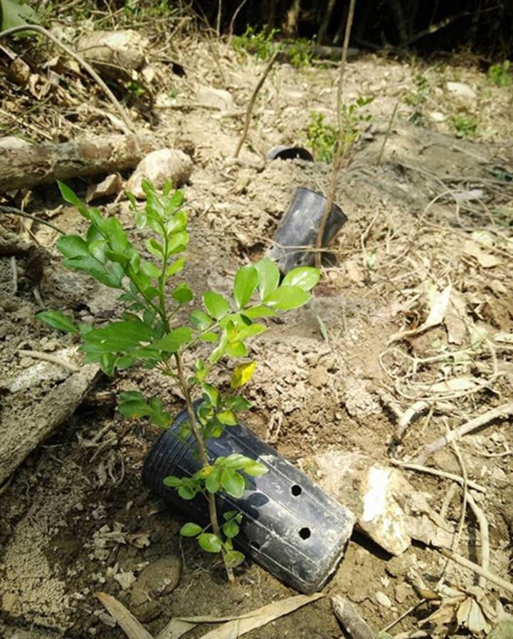

與自然的邂逅
他們教會我的事
我與山，如果說是過客，不如說是長期的過客，也是因為父母的習慣、我的喜歡，幾乎每個月都有跟大自然接觸的機會，當一個健行者體驗都市沒有的氣息與自然味道。合歡山、拉拉山、阿里山、大禹嶺，甚至我跟老爸做過最瘋狂的事情，就是騎摩托車上合歡山吧。
每年植樹節前後林務局都會發送樹苗，我家從我小五開始就會去種樹，台灣光臘、楓樹等。從一年十棵樹開始，至今年已經達到三十棵樹的種植，總種植數量接近100棵樹木，這是我家的相處方式與從自然環境中的學習，種樹在實際落行後才知道不容易，因為環境、時間、氣候因素，我們得選擇樹種，除了人擇還有天擇。
我的記憶最深刻的就是我小五那一年種得桃子樹，在四年前應該是颱風的關係被吹垮，當時我以為已經整株傾倒的它或許就這樣再也不會起來，但過了兩三個月再去林裡看在斷裂的地方長出其他莖，一年多後它又變回過去直挺挺矗立的模樣，我當時覺得很不可思議，我曾經居然想放棄它，它靠著自己的力量與環境堅毅的活下來，而且更茁壯。
我的科展生涯，在高中階段也是我收穫最多最璀璨的時刻前，我確實也曾經被老師家長放棄過，阻止過我進行任何一步後續的研究，但我因為我種樹的經驗，我堅信著一定有可以探出頭接收陽光的機會，只要我繼續努力著就有可能。在2017年一整年的努力與堅持下，我雖然在比賽中仍然不出色，不過我自己清楚知道我的成長，也相信自己持續的努力會有被支持與發現的機會。
堅持努力，是我的樹教會我的，即使大家放棄你，也要勇敢的撐下去。